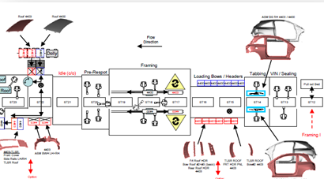

Section 01
Process Planning
Define process sequences, station concepts, and manufacturing feasibility inputs that support efficient automotive assembly operations.
- ✔ Assembly Sequences
- ✔ Line Load Balances
- ✔ Space Allocation Layouts